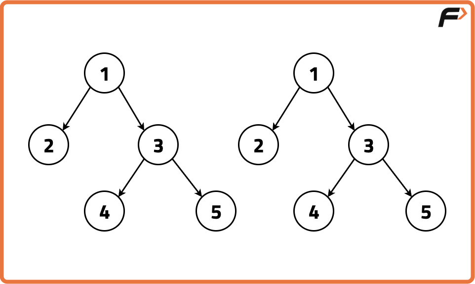
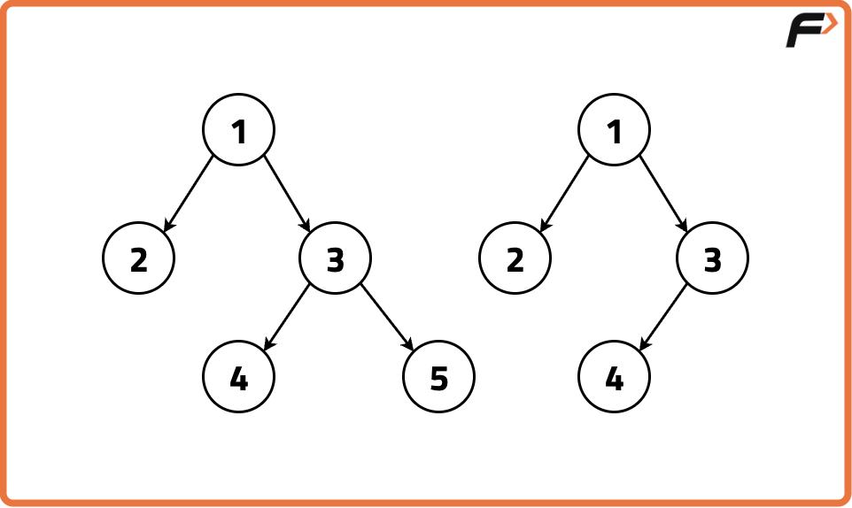
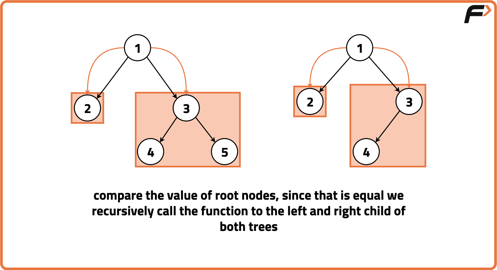
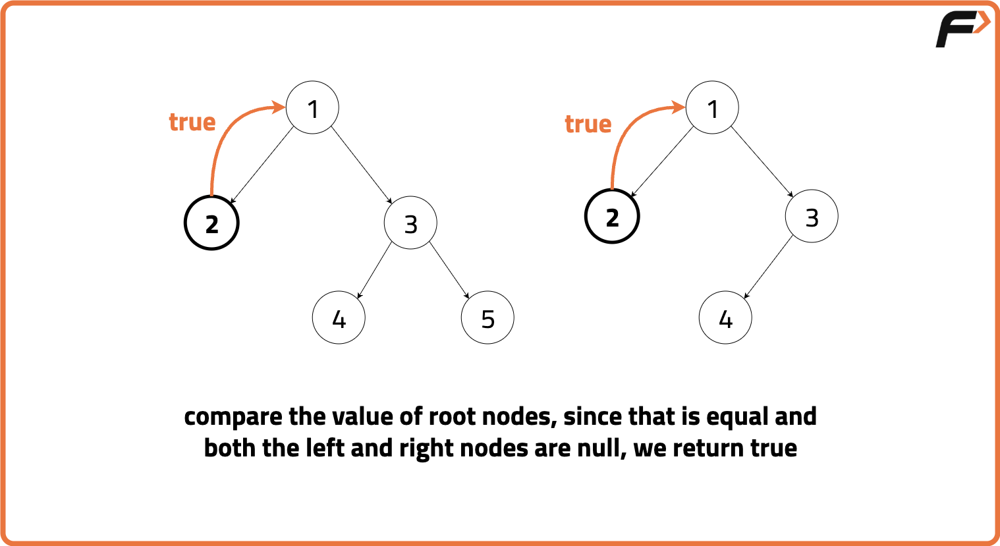
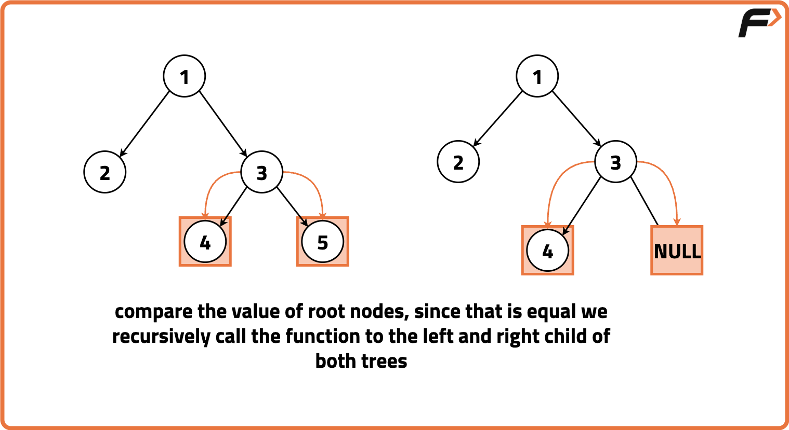
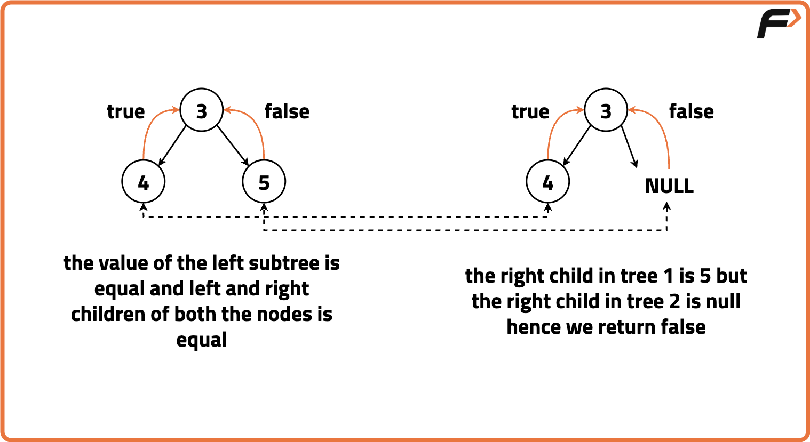
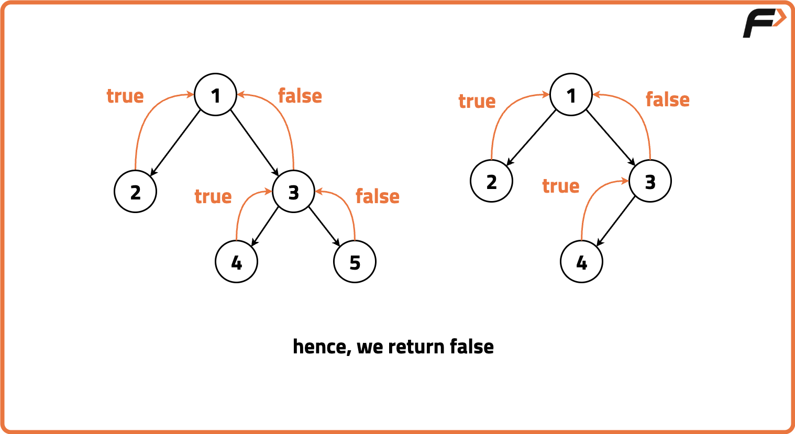

Check if two trees are identical
Problem Statement: Given two Binary Trees, return if true if the two trees are identical, otherwise return false..
Two trees are said to be identical if these three conditions are met for every pair of nodes :
- Value of a node in the first tree is equal to the value of the corresponding node in the second tree.
- Left subtree of this node is identical to the left subtree of the corresponding node.
- Right subtree of this node is identical to the right subtree of the corresponding node.
Examples
Example 1: Input:Binary Tree 1: 1 2 3 -1 -1 4 5, Binary Tree 2: 1 2 3 -1 -1 4 5
Output: True, these trees are identical. Example 2: Input:Binary Tree 1: 1 2 3 -1 -1 4 5, Binary Tree 2: 1 2 3 -1 -1 4
Output : False, these trees are not identical.
Disclaimer: Here is the practice link to help you assess your knowledge better. It's highly recommend trying to solve it before looking at the solution.
Approach
Algorithm
To determine if two binary trees are identical, we can follow a recursive approach. We traverse both trees in the preorder manner, meaning that the current node's value is checked before recursively traversing its left and right subtrees.
The idea is to traverse both trees simultaneously, comparing the values of corresponding nodes at each step. We need to ensure that the left subtree of each node in the first tree is identical to the left subtree of the corresponding node in the second tree, and similarly for the right subtrees.
- Base Case: The base case for recursion is reached when both nodes are null,
indicating the end of the subtree. In this case, return
true. - If only one of the nodes is null while the other is not, return
falsesince they cannot be identical.
Recursive Function:
- Check if the values of the current nodes in both trees are equal. If not, return
false. - Recursively check if the left subtree of both the trees is identical.
- Recursively check if the right subtree of both the trees is identical.
- If all recursive calls return
true, the trees are identical.
Algorithm:
- Start at the root node of both trees (node1 and node2).
- Check if the values of the current nodes in both trees are equal. If not, return
false. - Recursively check the left subtree and then the right subtree of both trees.
- If all recursive checks return
true, the trees are identical; otherwise, they are not.





Code
#include <bits/stdc++.h>
using namespace std;
// Node structure for the binary tree
struct Node {
int data; // Data stored in the node
Node* left; // Pointer to the left child
Node* right; // Pointer to the right child
// Constructor to initialize the node with a value
Node(int val) : data(val), left(nullptr), right(nullptr) {}
};
class Solution {
public:
// Function to check if two binary trees are identical
bool isIdentical(Node* node1, Node* node2) {
// Case 1: If both nodes are NULL, they are identical
if (node1 == NULL && node2 == NULL) {
return true;
}
// Case 2: If only one of the nodes is NULL, they are not identical
if (node1 == NULL || node2 == NULL) {
return false;
}
// Check if the current nodes have the same data value
// and recursively check their left and right subtrees
return ((node1->data == node2->data)
&& isIdentical(node1->left, node2->left)
&& isIdentical(node1->right, node2->right));
}
};
int main() {
// Creating the first binary tree (Node1)
Node* root1 = new Node(1);
root1->left = new Node(2);
root1->right = new Node(3);
root1->left->left = new Node(4);
// Creating the second binary tree (Node2)
Node* root2 = new Node(1);
root2->left = new Node(2);
root2->right = new Node(3);
root2->left->left = new Node(4);
// Creating an instance of the Solution class
Solution solution;
// Check if the two binary trees are identical and output the result
if (solution.isIdentical(root1, root2)) {
cout << "The binary trees are identical." << endl;
} else {
cout << "The binary trees are not identical." << endl;
}
return 0;
}
Complexity Analysis
Time Complexity: O(N + M) where N is the number of nodes in the first Binary Tree and M is the number of nodes in the second Binary Tree. This complexity arises from visiting each node of both trees during their comparison.
Space Complexity: O(1) as no additional space or data structures are created that are proportional to the input size of the tree.